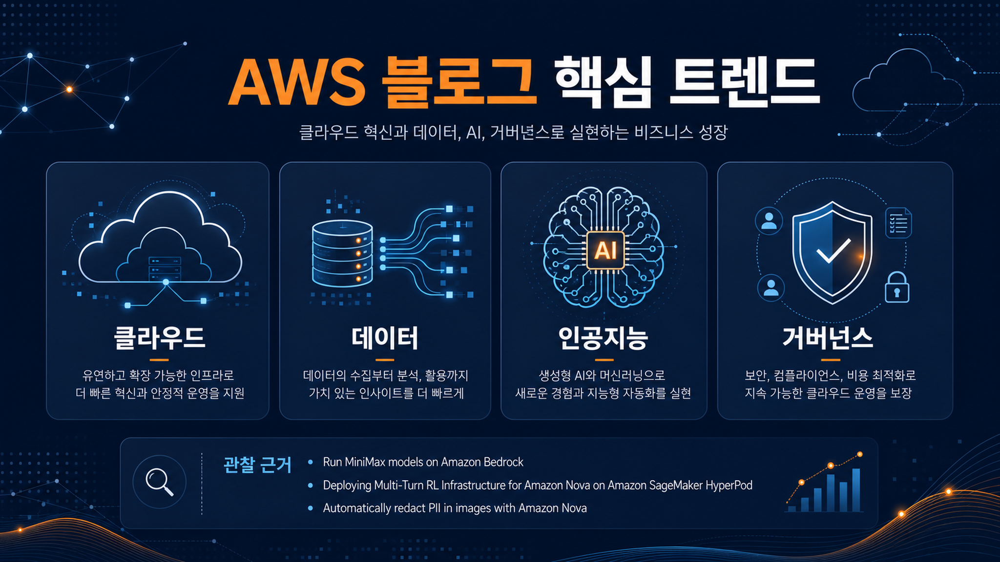
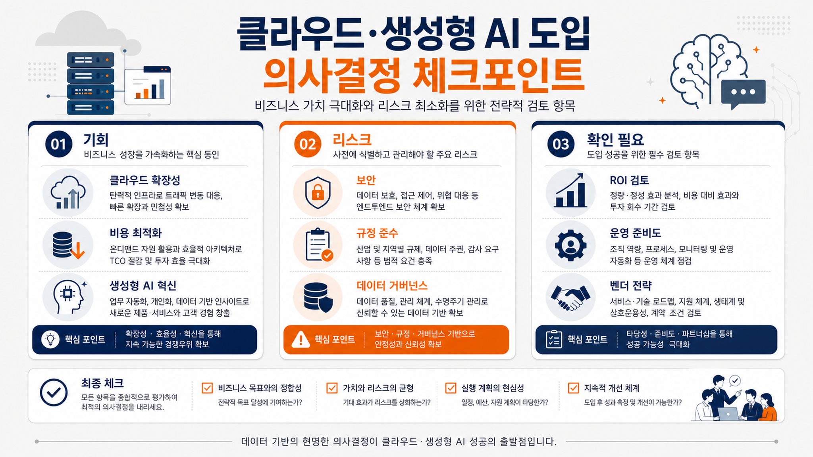
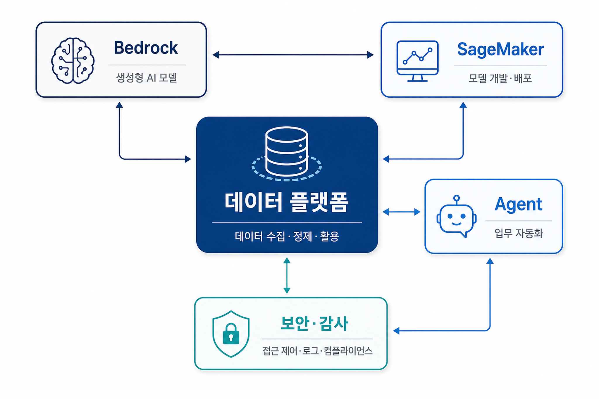

아마존 베드록에서 미니맥스 모델 실행
미니맥스 모델이 아마존 베드록 카탈로그에 추가되며, 장문 문서 분석과 에이전트형 소프트웨어 작업에 활용할 수 있는 선택지가 넓어졌습니다.
원문 보기이번 실행에서 신규 저장·위키 처리된 문서 5건을 기준으로 작성했습니다. 단순 발표 요약이 아니라, 관찰된 사실과 출처를 기준으로 기업 의사결정자가 확인해야 할 기회와 리스크를 정리했습니다.
오늘 확인한 신규 항목은 5건입니다. 모델 선택, 다중 턴 강화학습 인프라, 이미지 개인정보 비식별 처리, 벤치마크 추적, 주간 서비스 업데이트가 함께 관찰되었습니다.

미니맥스 모델이 아마존 베드록 카탈로그에 추가되며, 장문 문서 분석과 에이전트형 소프트웨어 작업에 활용할 수 있는 선택지가 넓어졌습니다.
원문 보기아마존 노바 포지와 세이지메이커 하이퍼팟을 이용해 여러 단계의 상호작용을 평가하는 강화학습 파이프라인을 구성하는 사례가 제시되었습니다.
원문 보기이미지 속 개인정보를 맥락 추론, 세분화, 문자 인식을 결합해 비식별 처리하는 방식이 소개되었습니다.
원문 보기생성형 인공지능 추론 벤치마크와 추천 결과를 엠엘플로우로 실시간 기록해 모델·인프라 선택 근거를 남기는 흐름이 강조되었습니다.
원문 보기주간 소식은 모델 선택, 에이전트 작업 공간, 서비스 가용성 변화처럼 기업 검토 범위가 넓은 항목을 한 번에 보여줍니다.
원문 보기이번 실행에서 관찰된 변화는 모델 선택지 확대, 학습·평가 인프라, 개인정보 비식별 처리, 실험 추적성 강화에 집중됩니다. 이는 특정 도입 결론이 아니라 원문에서 확인된 기술 축입니다.

기업 관점에서는 기능 자체보다 적용 전제 조건을 확인해야 합니다. 데이터 위치, 모델 선택 기준, 권한 경계, 비용·성능 근거, 감사 기록 가능 여부가 원문별 검토 포인트입니다.
관리형 서비스와 추적 가능한 실험 기록을 활용하면 기술 검토 속도와 의사결정 근거를 함께 높일 수 있습니다.
원문 사례의 전제와 자사 데이터·보안·규제 조건이 다르면 동일한 효과를 기대하기 어렵습니다.
각 게시물의 세부 아키텍처, 비용 조건, 지역·계정 제약은 원문과 공식 문서로 추가 확인해야 합니다.
한국 기업은 원문에서 제시된 서비스 조합을 그대로 도입하기보다, 개인정보·데이터 반출·내부 권한 체계·감사 대응 가능성을 먼저 확인하는 편이 안전합니다. 특히 생성형 인공지능과 에이전트 관련 항목은 데이터 소스 신뢰도와 결과 검증 책임을 명확히 해야 합니다.
이번 데이터 기준의 실행 전략은 단계별 로드맵이 아니라 검토 항목입니다. 원문별로 적용 목적, 필요한 서비스, 기존 시스템 의존성, 통제 장치, 검증 지표를 한 장짜리 의사결정 메모로 정리한 뒤 파일럿 여부를 판단하는 방식을 권장합니다.

학습·추론·검색에 사용되는 데이터의 출처와 보관 위치를 확인해야 합니다.
성능, 비용, 지역, 책임 있는 사용 조건을 함께 비교해야 합니다.
권한, 로그, 평가 결과가 사후 검토 가능한 형태로 남는지 확인해야 합니다.
| 관찰된 사실 | 근거 출처 주소 | 기업 의사결정 시사점·리스크·기회 |
|---|---|---|
| 아마존 베드록에서 미니맥스 모델 실행 | 출처 URL | 관찰된 사실은 베드록의 모델 선택 폭 확대입니다. 기업은 단일 모델 성능보다 데이터 보호, 지역, 비용, 장문 처리 품질을 함께 비교해야 합니다. |
| 아마존 세이지메이커 하이퍼팟 기반 다중 턴 강화학습 인프라 배포 | 출처 URL | 관찰된 사실은 여러 단계의 에이전트 행동을 학습·평가하는 인프라 예시입니다. 기업은 학습 비용, 보상 기준의 타당성, 실패 복구 기준을 검토해야 합니다. |
| 아마존 노바로 이미지 내 개인정보 자동 비식별 처리 | 출처 URL | 관찰된 사실은 이미지 개인정보 비식별 처리를 여러 도구 조합으로 자동화하는 접근입니다. 기업은 규제 준수와 오탐·누락 리스크를 함께 평가해야 합니다. |
| 아마존 세이지메이커 인공지능과 엠엘플로우 기반 벤치마크 결과 스트리밍 | 출처 URL | 관찰된 사실은 벤치마크 결과를 추적 가능한 실험 기록으로 남기는 흐름입니다. 기업은 모델·인스턴스 선택의 근거를 감사 가능한 형태로 축적할 기회를 가집니다. |
| 주간 아마존웹서비스 소식: 클로드 소넷 5, 인공지능 에이전트용 워크스페이스, 서비스 가용성 업데이트 | 출처 URL | 관찰된 사실은 주간 소식에서 모델, 에이전트용 작업 환경, 가용성 업데이트가 동시에 등장한다는 점입니다. 기업은 새 기능 채택보다 영향 서비스와 계정별 제약 확인을 먼저 해야 합니다. |
이미지 프롬프트 상세는 작업 폴더에 별도 기록했습니다. 이미지 생성은 챗지피티 인증 기반 이미지 생성 경로로 완료했습니다.